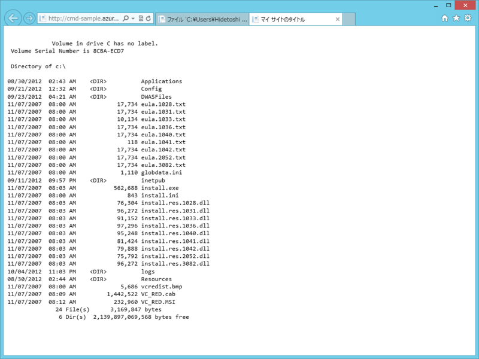
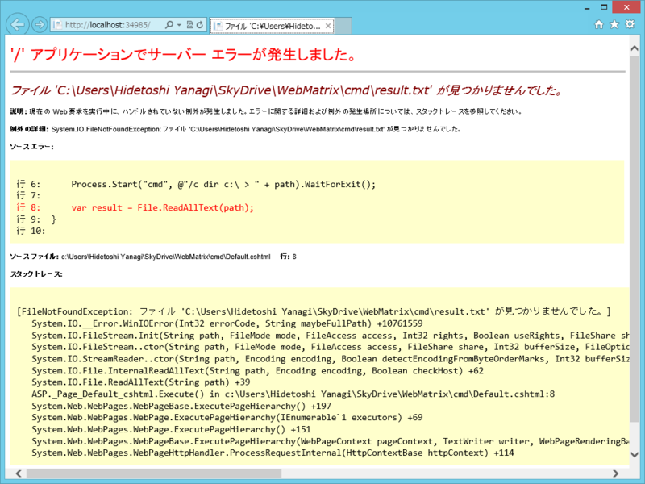
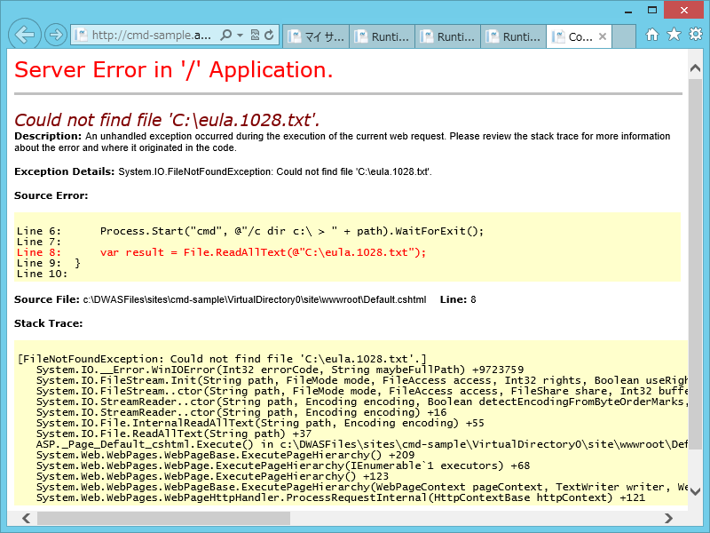

よい子はマネしちゃいけないデモを真似してみた
公開日：
Developer Camp 2012 Japan Fall に参加してきました！（1日目） - だるろぐ でやってたデモを真似してみた。
# Default.cshtml@using System.IO @using System.Diagnostics
@{ // 結果を出力するファイルのパスを決める var path = HttpContext.Current.Server.MapPath("~/result.txt");
// dir c:\ > result.txt を実行（ /c は実行して終了するオプション） Process.Start("cmd", @"/c dir c:\ > " + path).WaitForExit();
// result.txt を読み込む var result = File.ReadAllText(path); }
<!DOCTYPE html>
<html lang="ja"> <head> <meta charset="utf-8" /> <title>マイ サイトのタイトル</title> <link href="~/favicon.ico" rel="shortcut icon" type="image/x-icon" /> </head> <body> <pre><code style="font-family: Consolas, monospace;"> @result </code></pre> </body> </html>

わぉ！ サーバーの C ドライブ直下の内容がみえてる！ これをああしたりこうしたりすれば ruby が動いちゃったりするのか（ゲフンゲフン
でも、よい子は真似しないように。実際のデモでは WaitForExit() をし忘れて result.txt が読めなくなるなんてハプニングがあったけど、こういうことをやり続ければいずれサーバーが不安定になるよね（知らんけど）。少なくとも、Free/Share ではあんまりやらないほうがいいんだろう。Reserved が使えるお金持ちだけやれ。
ちなみに、帝国兵のひとは App_Code フォルダが好きだということでそこにクラスを書いていたけれど、今回はそのままだと面白くないかなと思ったので Default.cshtml に書いてある。わしも App_Code フォルダ大好き。結構いろんなところで使えて便利なんだよね。
- SignalR + WebMatrix でサーバーフォルダの監視を行ってみる - だるろぐ
- SignalR Deep Dive ! に参加してきた＋WebMatrix で SignalR 動かしてみた - だるろぐ
- 寄り道： Rails の Flash っぽい機能を WebMatrix で使いたい（2） ―― @helper と @functions とわたし - だるろぐ
- App_Code でサブフォルダーを利用する - だるろぐ
使いこなしていきたいところ。
ついでに（1） ―― ローカルで実行した場合

dir c:\ > result.txt の時点でコケるみたい。きっと権限の問題なんだろうな。
ついでに（2） ―― ファイル、読んでみたくなるよね？

試しに C:\eula.1028.txt を読んでみようと思ったけど失敗した。まぁ、そうだろうな。